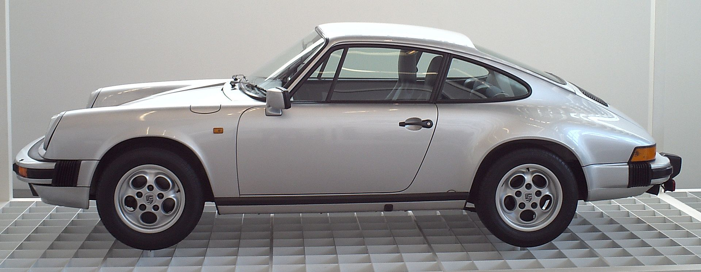

В конце 1950-х был изготовлен прототип Porsche 695. У руководства компании на этот счёт не было единого мнения: 356-й успел заработать себе хорошую репутацию, поэтому для небольшой семейной фирмы Porsche, переход на новую модель был связан с повышенным риском. Но конструкция образца 1948 года устаревала всё быстрее и резервов для её обновления почти не оставалось. Поэтому в 1963 году на автосалоне во Франкфурте был представлен Porsche 911. Основные моменты в конструкции остались теми же (заднее расположение оппозитного мотора и задний привод), но это уже был современный спортивный автомобиль с классическими линиями кузова в духе Porsche 356. Автором дизайна стал Фердинанд Александр «Бутци» Порше, старший сын Ферри Порше. Первоначально вместо индекса «911» должен был использоваться другой — «901». Но комбинация из 3 цифр с нулём посередине уже была зарезервирована за Peugeot. Автомобиль стал называться 911, но цифры 901 никуда не исчезли: так стали называть 911 модель по внутризаводской номенклатуре (1964—1973). Мотор в первые 2 года выпуска был один — 2-литровый 130-сильный. В 1966 году на конвейер встала модификация Targa (разновидность открытого кузова со стеклянной крышей); после окончания в 1965 году выпуска кабриолетов 356-й серии, они как таковые не появлялись в модельном ряду компании вплоть до 1982 года. В конце 1960-х годов колёсную базу машины увеличили и стали оснащать моторы увеличенного объёма c механическим впрыском. Вершиной эволюции 901-х стали «боевые» модификации Carrera RS 2.7 и Carrera RSR начала 1970-х. Слово Carrera появилось в названии спортивных версий 356 в середине 1950-х — так увековечили память о победе в гонке Каррера Панамерикана 54-го года, после которой марка получила широкую известность в Северной Америке.
